How these clips were chosen. They are selected qualitative examples, not a random sample: the test clips were picked from the 46 test videos as cases where the SD-YOLO variants improve on their baselines. Even so, SD-YOLOv8n is worse than its baseline on three of them. Clips longer than 40 s are shortened here. Tracking F1 is computed on every labelled frame after ByteTrack and is not comparable with the detection mAP in the paper. The unbiased evidence is the full test-set results below.
Cross-Platform Small-Drone Detection via Progressively Enhanced Lightweight YOLO Architectures
Abstract
Detecting drones that occupy only a few pixels requires detectors that are sensitive to small targets yet light enough for deployment, but lightweight modules are usually validated on a single YOLO release with frame-level splits, leaving their transfer across generations and platforms untested. We apply one controlled progressive search to YOLOv8n, YOLO11n, and YOLO26n: a stride-4 P2 head, introduced a priori, followed by one of four attention blocks, four downsampling operators, and four neck designs, each selected by generation-averaged validation APsmall. The resulting 48 configuration–generation evaluations are performed on a video-disjoint benchmark of 76 videos (117,838 boxes, 73.3% smaller than 322 pixels) whose 46 test videos cover seven airframe categories and one GoPro source group. The best test configuration per generation yields SD-YOLOv8n (P2 + CAA), SD-YOLO11n (P2 + ELA + ADown + RepC3-PAN), and SD-YOLO26n (P2 + ELA + ADown + RepGFPN), which raise test mAP50–95 from 0.115 to 0.142, 0.106 to 0.143, and 0.090 to 0.133 (Wilcoxon p = 0.040, p < 0.001, p = 0.008; post-selection) and APsmall by 39%, 34%, and 54%. Leave-one-group-out selection picks the same configuration in 22 of 24 folds, with positive gains on held-out groups for all three generations, the YOLO11n gain remaining significant after Holm correction. P2 is the only evaluated module with a positive mean APsmall change in all three generations, although no module effect survives multiple-testing correction. No significant accuracy difference is detected between the three variants, and SD-YOLO26n reaches it with 2.03 M parameters, 18.8% fewer than its baseline.
76
videos, split by video
46
unseen test videos
117,838
annotated drone boxes
73.3%
of boxes under 32×32 px
3
YOLO generations, one search path
Overview
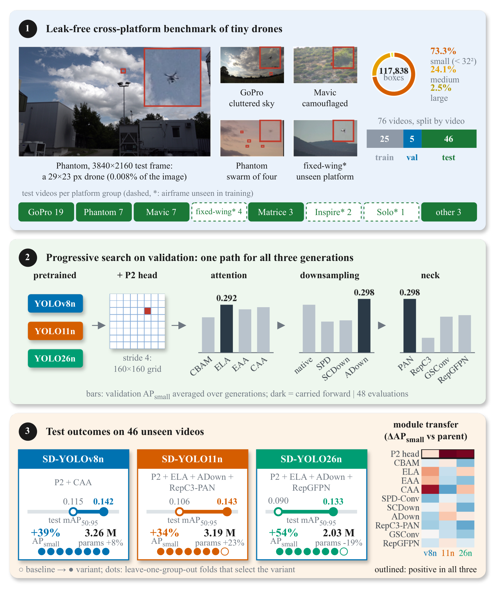
1 · A video-disjoint, cross-platform benchmark
Every video sits in exactly one split: 25 for training, 5 for validation, and 46 for testing. The test set covers eight platform groups, including three airframes (custom fixed-wing, Inspire, Solo) that never appear in training.
2 · One search path for three generations
A stride-4 P2 head is added to each pretrained detector first. Attention, downsampling, and neck modules are then chosen in turn by validation APsmall averaged over the three generations, so all three detectors receive the same modifications.
3 · Generation-aware conclusions
P2 is the only module whose mean small-object gain is positive in all three generations. Attention and neck choices help one generation and hurt another, so published modules should be re-validated for each YOLO release.
Tracking Videos
Each clip shows the same frames processed by all six detectors with the same tracker. Pick a video below.
Correct detection (IoU ≥ 0.5), with track ID and confidence
False alarm
Box on a drone with IoU < 0.5
Missed drone
Main Results
Each variant against its own pretrained baseline on the 46 test videos (macro means over videos).
SD-YOLOv8n
YOLOv8n + P2 + CAA
0.1150.142
test mAP50–95
+39%APsmall
3.26 Mparams
12.6GFLOPs
SD-YOLO11n
YOLO11n + P2 + ELA + ADown + RepC3-PAN
0.1060.143
test mAP50–95
+34%APsmall
3.19 Mparams
12.7GFLOPs
SD-YOLO26n
YOLO26n + P2 + ELA + ADown + RepGFPN
0.0900.133
test mAP50–95
+54%APsmall
2.03 Mparams (−18.8%)
6.67GFLOPs
| Model | Modules | Params | GFLOPs | mAP50 | mAP50–95 | APsmall | Δ mAP50–95 [95% CI] | p |
|---|---|---|---|---|---|---|---|---|
| YOLOv8n | pretrained | 3.01 M | 8.19 | 0.325 | 0.115 | 0.089 | — | — |
| SD-YOLOv8n | P2 + CAA | 3.26 M | 12.62 | 0.376 | 0.142 | 0.123 | +0.027 [+0.007, +0.047] | 0.040 |
| YOLO11n | pretrained | 2.59 M | 6.44 | 0.305 | 0.106 | 0.082 | — | — |
| SD-YOLO11n | P2 + ELA + ADown + RepC3-PAN | 3.19 M | 12.66 | 0.398 | 0.143 | 0.110 | +0.037 [+0.016, +0.057] | <0.001 |
| YOLO26n | pretrained | 2.50 M | 5.77 | 0.259 | 0.090 | 0.072 | — | — |
| SD-YOLO26n | P2 + ELA + ADown + RepGFPN | 2.03 M | 6.67 | 0.353 | 0.133 | 0.111 | +0.043 [+0.017, +0.071] | 0.008 |
Paired Wilcoxon signed-rank test over the test videos, with a bootstrap 95% CI. The variants are the best test configuration of each generation, so these comparisons are post-selection; the leave-one-group-out analysis selects each variant without seeing the platform group it is scored on.
Analysis
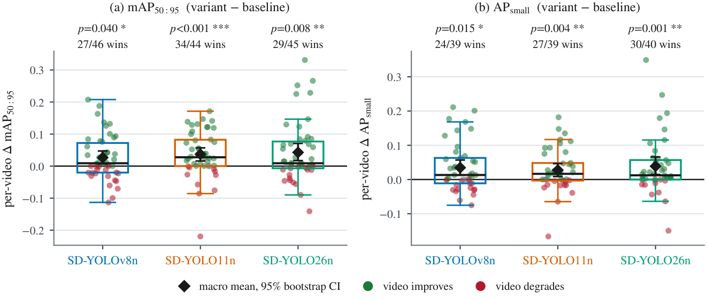
Per-video change from each pretrained baseline to its variant on the 46 test videos.
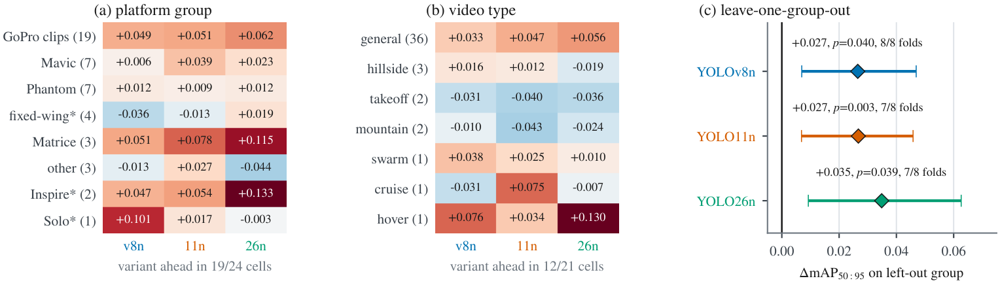
Change by platform group and under leave-one-group-out selection. The gain is positive in all three generations; after Holm correction it is significant for SD-YOLO11n.
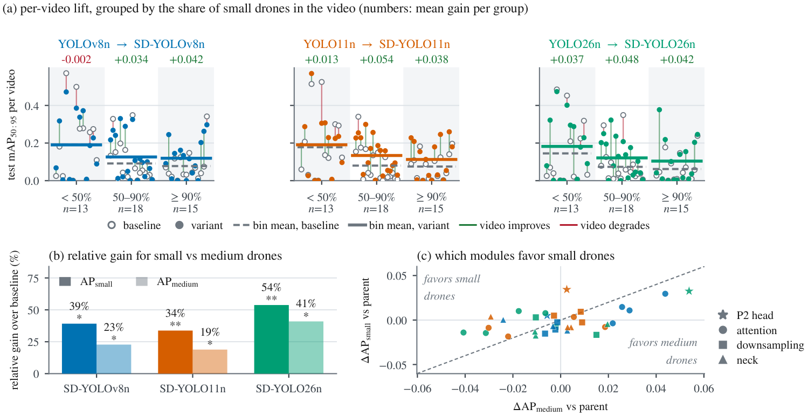
Accuracy by drone size: gains are largest in videos dominated by small drones.
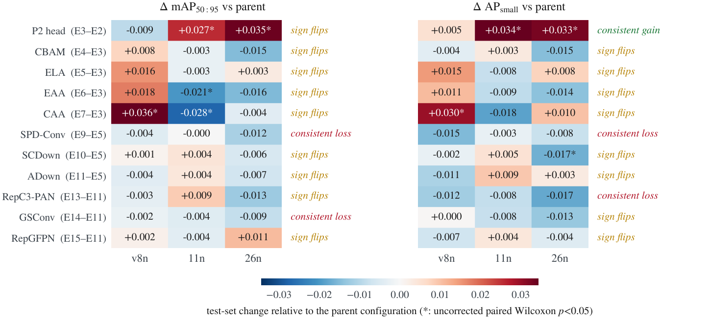
Effect of each module relative to its parent in the same generation. P2 is the only module with a positive mean APsmall change in all three generations; no module effect survives multiple-testing correction.
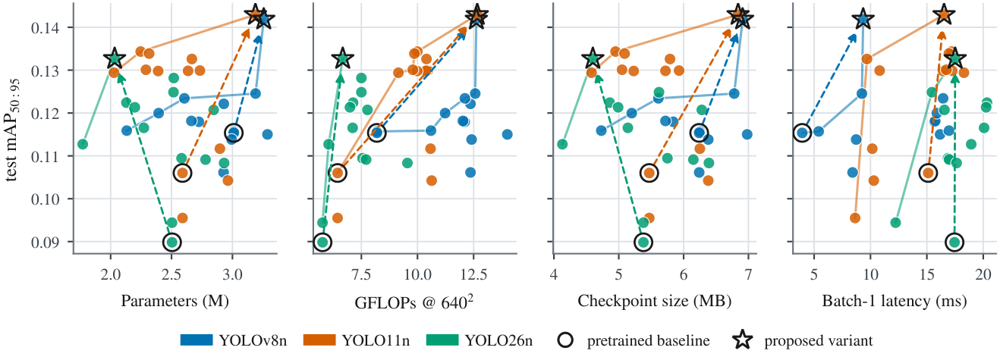
Test mAP50–95 against parameters, GFLOPs, checkpoint size, and latency.
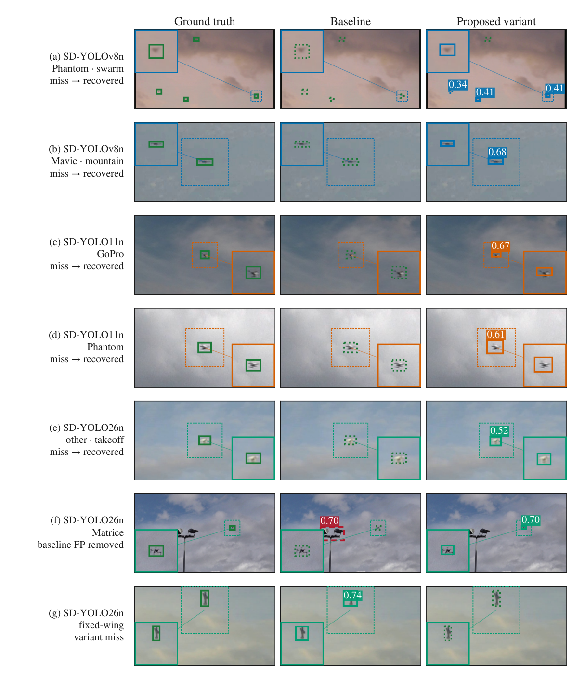
Test frames: ground truth, pretrained baseline, and variant. The last row is a failure case.
Architectures
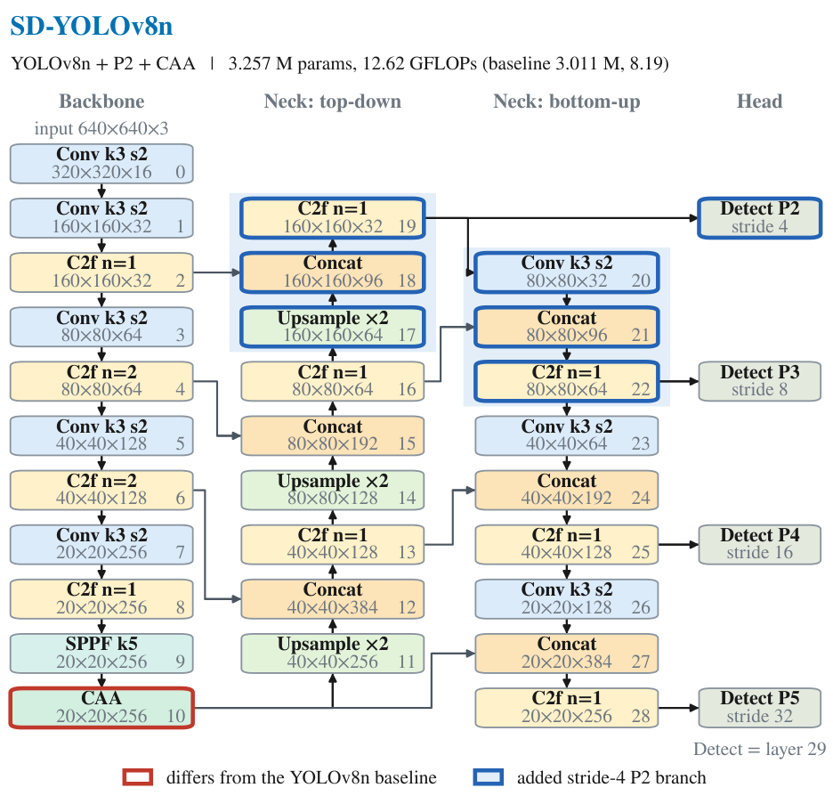
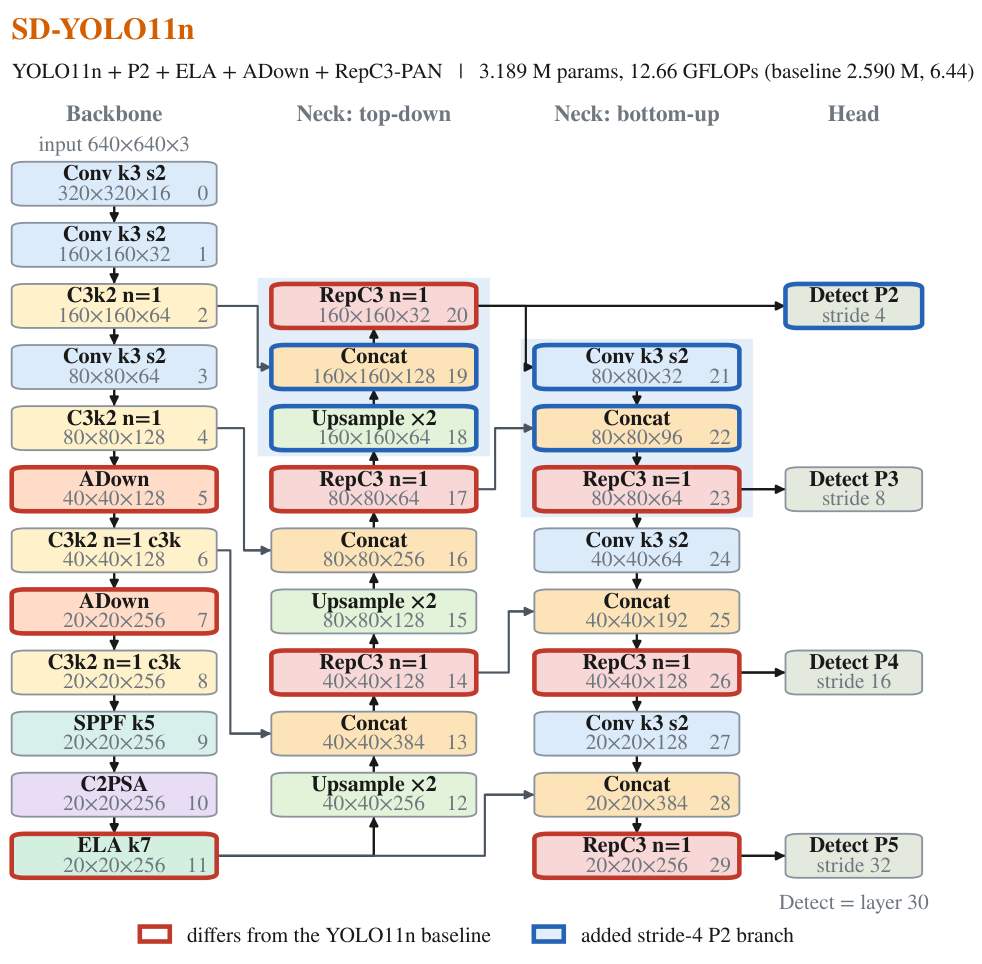
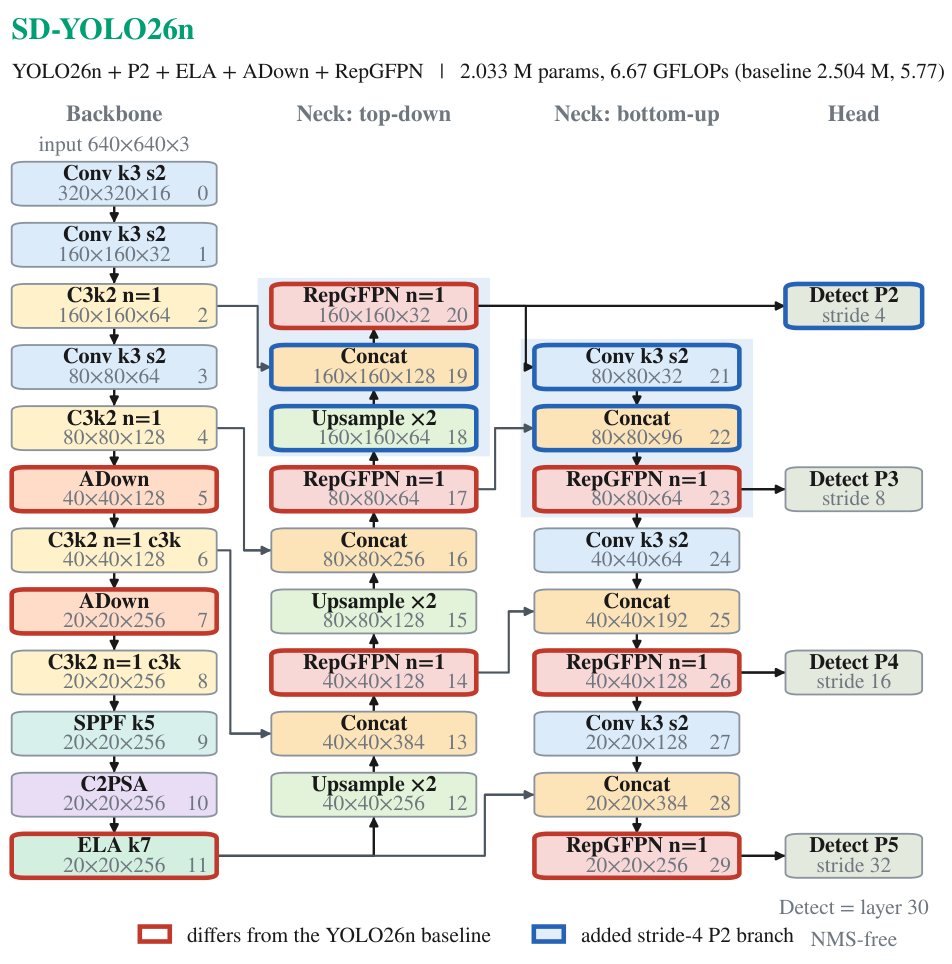
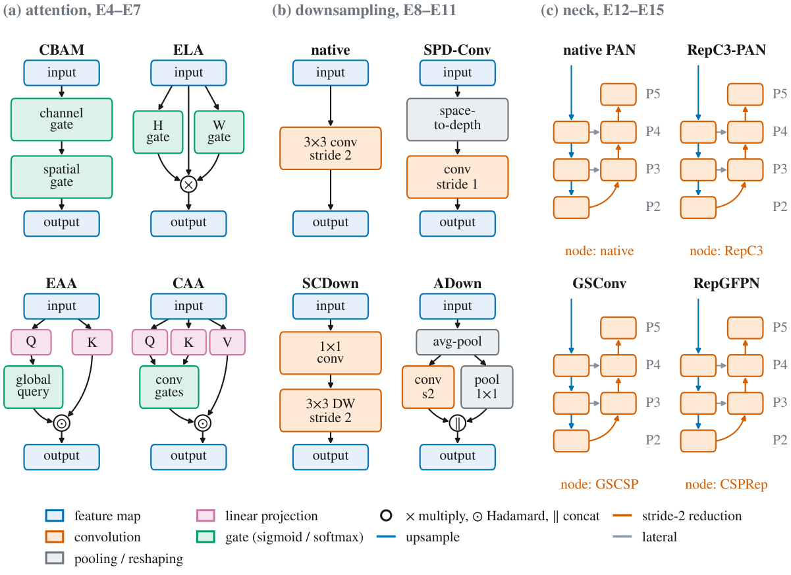
BibTeX
@article{rizwan2026sdyolo,
title = {Cross-Platform Small-Drone Detection via Progressively Enhanced
Lightweight {YOLO} Architectures},
author = {Rizwan, Muhammad and Khan, Abdul Rehman and Khan, Muhammad Muzaffar
and Ullah, Sibghat and Hussain, Muhammad Ishfaq and Ahmed, Waqas
and Jeon, Moongu and Khan, Asifullah},
journal = {Under review},
year = {2026}
}